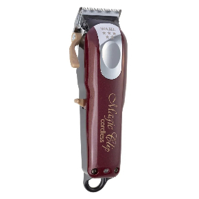
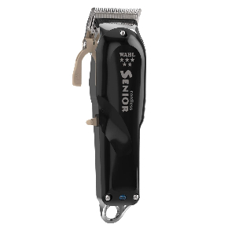
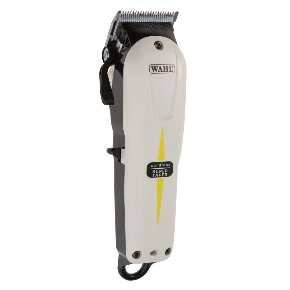
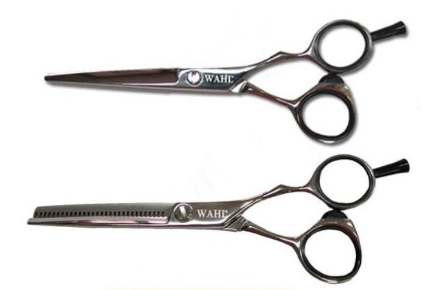
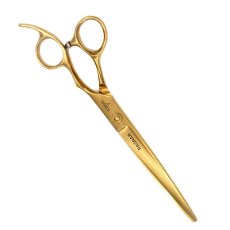
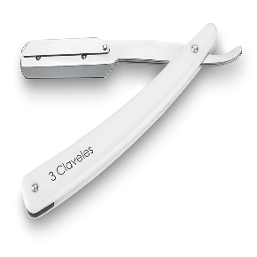
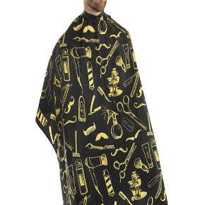
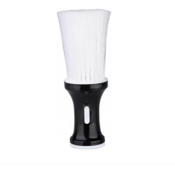
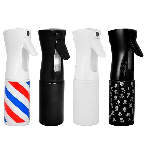

Descubre la renovación de un clásico. En ésta ocasión, wahl nos presenta unos de sus modelos estrella actualizado a la nueva era. Un producto eficiente, con cuchilla regulable y con batería de iones de litio.
 ComprarWahl Senior presenta el motor más potente en una recortadora Wahl que genera una mayor velocidad de la cuchilla con un mayor motor para obtener más potencia de corte.
 ComprarWahl Super Taper Cordless es una máquina cortapelos muy ligera y con diseño sin cable para un manejo más cómodo y manejable.
 Comprar¿Unas tijeras profesionales a un precio así? Pues sí, aqui están las tan reclamadas Tijeras de corte profesionales Wahl 6″
 ComprarCon una fabricacion en titanio, incluyen una llave de ajuste de tornillo que hacen que la fricción sea más suave.
 ComprarNavaja Acero Inox. Tres cuerpos - Barbería, Peluquería, Uso Personal
 ComprarEsta capa se puede usar en el Salón de peluquería o en casa. La capa tiene función impermeable. También protege la ropa de tus clientes cuando la uses en tinte para el cabello o permanente, etc.
 ComprarBrocha sacapelo y pelusa, excelente calidad, cerdas suaves, ideal para barberias y peluquerias
 ComprarRociador atomizador continuo prolongado, modelo original, excelente calidad, capacidad 200 ml, ideal para peluquerias, negocios , para la cartera, usos agua, alcohol liquido
 Comprar